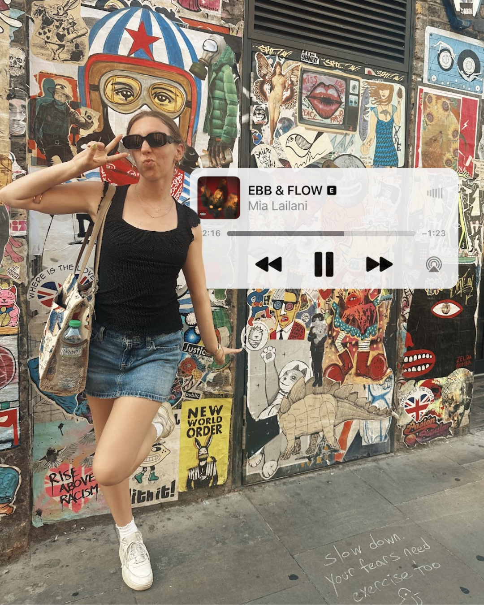

Aja
Kimsey
UX Writer at CU Boulder OIT, with a practice rooted in UX research, content, and social media work.
View my projects →A LITTLE MORE ABOUT ME
Researcher, writer, and collector of good songs.
I’m drawn to clear experiences, bright ideas, and creative work with a point of view.

SELECTED WORK
Projects with purpose.
01↗02↗03↗
See all projects →UX AUDIT
UNICEF.org
An accessibility- and user-experience-focused audit of a global nonprofit website.
UX REDESIGN
Cheyenne Mountain Zoo
A redesigned web experience for planning an easy, engaging zoo visit.
SOCIAL MEDIA
Colorado Club Dance Team
Two years of strategy and content that grew a vibrant team community.